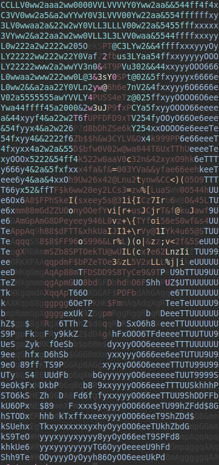

This is a tool to print colored ASCII representations of images in the terminal, scaled to maximum resolution, developed for UNIX-based operating systems. It may also work on Windows (untested).
To use the tool, you must have Python and its standard libraries installed. You must also have the colormath library installed. This tool was developed using Python 2.7.6.
Before we begin: a particular feature of this script is that it detects the current dimensions of your terminal/command line, so it always prints the ASCII representation as large as possible in the terminal. If you want to print a picture scaled to specific dimensions regardless of the dimensions of your terminal, you may also simply hardcode that on line 59 of the script (and comment out lines 42 through 57).
Use is pretty straightforward. The script takes two command-line options: the location of the image you want to print out, and whether you want to use the basic ('b') or extended ('e') ASCII character set. The basic set is more or less the keys you're used to typing on a keyboard, and the extended set includes special characters and symbols (e.g. Æ, ®, ÿ, etc.). Let's try it out with this sample image:
 (Picture Source)
(Picture Source)
{kind=link}
We'll run the following command, using 'b' to use the basic ASCII set:
python ascii_image.py fish.jpg b
This results in the following terminal output:

Take a step back, and it reminds of the image of the fish! Note that the settings of the appearance of your terminal are critically important: choice of font, font size, and underlying colorscheme can make a world of difference. To prove this point, I ran the exact same script in a terminal with the colorscheme I normally use for coding. It looks awful:
Now, by contrast, this uses the same options as in the first image, except that I took the font size down from 8.0 to 4.0. This allows for significantly greater detail:
- This script uses ANSI escape codes to display color. The default ANSI escape codes only support seven colors, which yields one of the limitations of this program. Apparently there exist expansions to ANSI escape codes that support the printing of more colors to the terminal.
- ANSI escape codes also allow for dictating the background of a character, not just the foreground color. The strategic use of foreground/background colors and a sufficiently small font size would greatly expand the effective color palette by “blending” colors.
- As it stands, the program tends to stretch images vertically, because each pixel is mapped to a character, and the characters of most fonts are more tall than they are wide. A solution to this would be to detect the dimensions of the terminal font (which is presumably monospaced), and to scale the dimensions of the output accordingly.
You can download the file here, or view the GitHub repository here. Please contact me if you find any bugs or use my script for any interesting derivative work — I'd like to see what you come up with.
This work is licensed under a Creative Commons Attribution-NonCommercial-ShareAlike 4.0 International License.